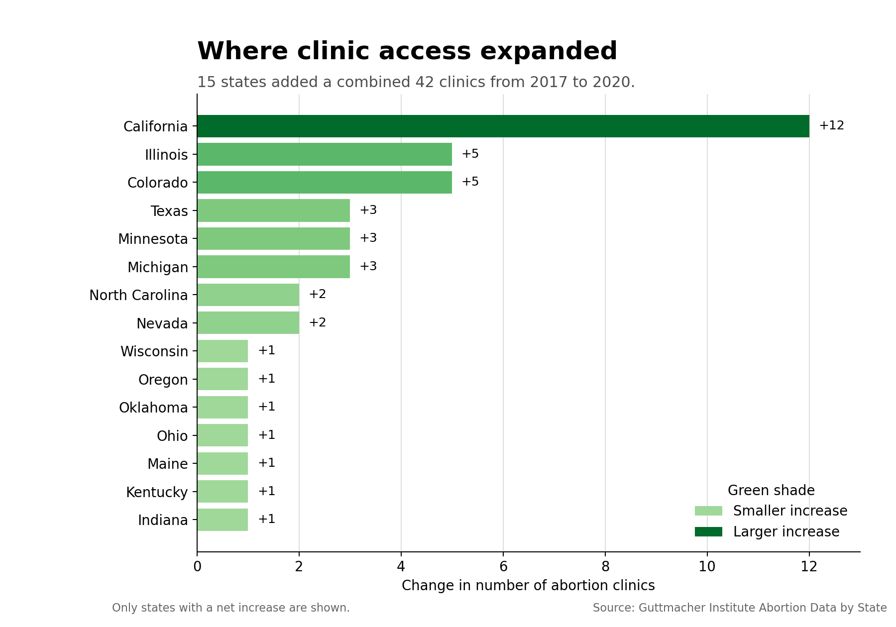
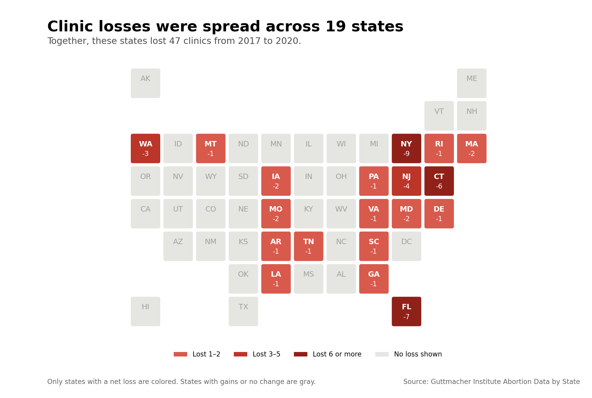

DSC 106 · Project 2
Persuasive and deceptive visualization
Proposition
Abortion clinic access improved in the United States from 2017 to 2020.
I used the same state-level dataset to argue both for and against this statement. In both charts, the change in the number of clinics is used as a rough measure of access.
Supporting the proposition
More clinics opened in 15 states

Design decisions and rationale
-
Show only states with an increase −1.5
I filtered out states that lost clinics or did not change. This makes the positive result easier to see, but it is also the most deceptive choice because readers do not see most of the country. I considered showing every state, but that would weaken the argument this chart is trying to make.
-
Sort states by their increase +1.5
I put the largest increase at the top so comparisons can be made using position and bar length on a common scale. Alphabetical order was another option, but it made the main pattern harder to notice.
-
Use darker green for larger gains −0.5
Green is commonly connected with growth, so it helps the increases feel positive. Darker shades also draw attention to states with larger gains, while bar length and direct labels keep the values readable without relying only on color. A single neutral color would be less persuasive but more emotionally balanced.
-
Lead with the total gain −0.5
The subtitle says that 42 locations were added before a reader reaches the small note explaining that only gain states are shown. The number is correct, but the order gives the good news more attention than the limitation.
Opposing the proposition
Clinic losses reached 19 states

Design decisions and rationale
-
Use a state tile map +1
The tile map shows where clinic losses happened while keeping every state in a familiar U.S. layout. The tiles are all equal in size, so this is useful for location but not for comparing state population or geographic area. I considered a geographic map, but small eastern states would have been harder to see.
-
Label every loss directly +2
Each red state includes its abbreviation and exact clinic change, so readers do not have to estimate values from color alone. A bar chart would make the values easier to rank, but it would not show the regional pattern as clearly.
-
Use darker red for larger losses 0
The darker shades make states with larger losses stand out, and the legend explains the ranges. Red also makes the decline feel serious, so a neutral single-color scale would be less persuasive.
-
Show gains and no-change states in gray −1.5
Gray keeps the reader's attention on clinic losses, but it combines states that gained clinics with states that did not change. A diverging red-and-green map would give both sides equal attention, but it would weaken the opposing argument.
-
State the conclusion in the title −0.5
The title emphasizes that losses occurred across 19 states instead of leading with the gains in other states. The statement is accurate, but it frames the chart negatively before the reader looks at the full pattern.
Which side I lean toward
I lean against the proposition. The supporting chart shows real growth in some states, but it leaves out every state that stayed the same or lost clinics. When all states are included, the country had five fewer clinics overall, and more states lost clinics than gained them. Clinic count is still only a rough measure of access because it does not show travel distance, appointment availability, state population, or how many patients each clinic can serve.
Final reflection
The straightforward part was calculating the state changes and giving the bar chart and tile map clear labels. The difficult part was deciding how much context each chart should include. I was surprised that I could make the same data feel positive just by filtering to the 15 states with gains. Nothing in that chart is invented, but leaving out the losses changes the conclusion a reader is likely to remember.
I now think ethical visualization means being honest not only about individual values, but also about the context needed to understand them. Color, sorting, and a persuasive title can be acceptable when the chart still lets a reader check the claim. Filtering becomes misleading when the missing data would reverse the overall conclusion and the omission is hard to notice. The small note on the supporting chart makes the choice technically visible, but it does not receive the same attention as the headline.
Neither chart proves whether practical access improved. Both rely on clinic count as a proxy, and the opposing chart groups states with gains together with states that had no change. A stronger analysis would add population, distance, clinic capacity, and policy information. This project showed me that a clear chart can still be incomplete, so the data transformation and its limits are part of the argument, not just technical details.
Data and method
Source: Guttmacher Institute Abortion Data by U.S. State, provided through DSC 106. I used the field Change in the no. of abortion clinics, 2017–2020. The supporting chart filters for positive values and sorts the states by change. The opposing chart uses the same state-level values but colors only the states with negative changes.